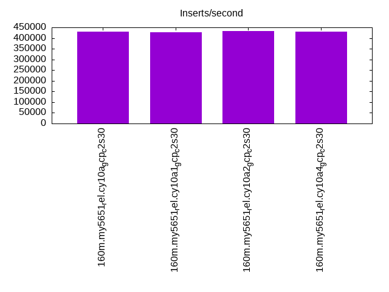
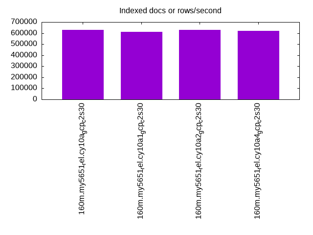
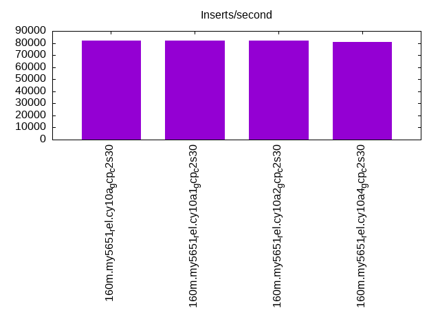
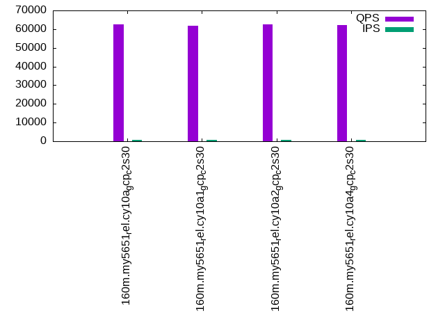
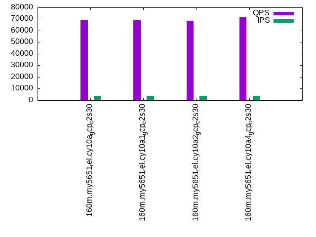
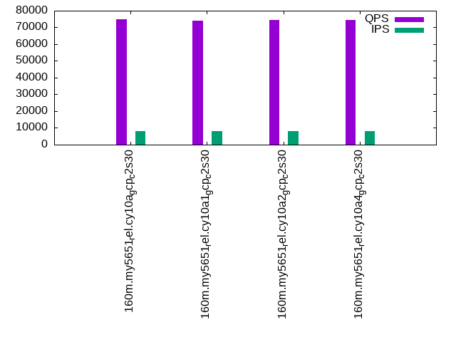

This is a report for the insert benchmark with 160M docs and 8 client(s). It is generated by scripts (bash, awk, sed) and Tufte might not be impressed. An overview of the insert benchmark is here and a short update is here. Below, by DBMS, I mean DBMS+version.config. An example is my8020.c10b40 where my means MySQL, 8020 is version 8.0.20 and c10b40 is the name for the configuration file.
The test server is a c2-standard-30 from GCP with 15 cores, hyperthreads disabled, 120G RAM, XFS + SW RAID 0 on 4 NVMe devices (1.5TB). The benchmark was run with 8 client and there were 1 or 3 connections per client (1 for queries or inserts without rate limits, 1+1 for rate limited inserts+deletes). There are 8 tables, client per table. It loads 160M rows without secondary indexes, creates secondary indexes, then inserts 80M rows with a delete per insert to avoid growing the table. It then does 3 read+write tests for 1800s each that do queries as fast as possible with 100, 500 and then 1000 inserts/second/client concurrent with the queries and 1000 deletes/second to avoid growing the table. The database is cached by InnoDB and the only IO is for writes.
The tested DBMS are:
The numbers are inserts/s for l.i0 and l.i1, indexed docs (or rows) /s for l.x and queries/s for q*.2. The values are the average rate over the entire test for inserts (IPS) and queries (QPS). The range of values for IPS and QPS is split into 3 parts: bottom 25%, middle 50%, top 25%. Values in the bottom 25% have a red background, values in the top 25% have a green background and values in the middle have no color. A gray background is used for values that can be ignored because the DBMS did not sustain the target insert rate. Red backgrounds are not used when the minimum value is within 80% of the max value.
| dbms | l.i0 | l.x | l.i1 | q100.1 | q500.1 | q1000.1 |
|---|---|---|---|---|---|---|
| 160m.my5651_rel.cy10a_gcp_c2s30 | 430108 | 627843 | 82051 | 62559 | 69065 | 74719 |
| 160m.my5651_rel.cy10a1_gcp_c2s30 | 427807 | 613410 | 82062 | 61645 | 68725 | 73900 |
| 160m.my5651_rel.cy10a2_gcp_c2s30 | 432432 | 630315 | 81841 | 62414 | 68501 | 74522 |
| 160m.my5651_rel.cy10a4_gcp_c2s30 | 430108 | 620543 | 81043 | 62307 | 71411 | 74438 |
This table has relative throughput, throughput for the DBMS relative to the DBMS in the first line, using the absolute throughput from the previous table.
| dbms | l.i0 | l.x | l.i1 | q100.1 | q500.1 | q1000.1 |
|---|---|---|---|---|---|---|
| 160m.my5651_rel.cy10a_gcp_c2s30 | 1.00 | 1.00 | 1.00 | 1.00 | 1.00 | 1.00 |
| 160m.my5651_rel.cy10a1_gcp_c2s30 | 0.99 | 0.98 | 1.00 | 0.99 | 1.00 | 0.99 |
| 160m.my5651_rel.cy10a2_gcp_c2s30 | 1.01 | 1.00 | 1.00 | 1.00 | 0.99 | 1.00 |
| 160m.my5651_rel.cy10a4_gcp_c2s30 | 1.00 | 0.99 | 0.99 | 1.00 | 1.03 | 1.00 |
This lists the average rate of inserts/s for the tests that do inserts concurrent with queries. For such tests the query rate is listed in the table above. The read+write tests are setup so that the insert rate should match the target rate every second. Cells that are not at least 95% of the target have a red background to indicate a failure to satisfy the target.
| dbms | q100.1 | q500.1 | q1000.1 |
|---|---|---|---|
| my5651_rel.cy10a_gcp_c2s30 | 793 | 3976 | 7965 |
| my5651_rel.cy10a1_gcp_c2s30 | 792 | 3974 | 7960 |
| my5651_rel.cy10a2_gcp_c2s30 | 794 | 3976 | 7960 |
| my5651_rel.cy10a4_gcp_c2s30 | 792 | 3978 | 7960 |
| target | 800 | 4000 | 8000 |
l.i0: load without secondary indexes. Graphs for performance per 1-second interval are here.
Average throughput:
Insert response time histogram: each cell has the percentage of responses that take <= the time in the header and max is the max response time in seconds. For the max column values in the top 25% of the range have a red background and in the bottom 25% of the range have a green background. The red background is not used when the min value is within 80% of the max value.
| dbms | 256us | 1ms | 4ms | 16ms | 64ms | 256ms | 1s | 4s | 16s | gt | max |
|---|---|---|---|---|---|---|---|---|---|---|---|
| my5651_rel.cy10a_gcp_c2s30 | 2.145 | 97.614 | 0.067 | 0.160 | 0.014 | 0.202 | |||||
| my5651_rel.cy10a1_gcp_c2s30 | 2.424 | 97.333 | 0.068 | 0.161 | 0.014 | 0.206 | |||||
| my5651_rel.cy10a2_gcp_c2s30 | 2.194 | 97.565 | 0.068 | 0.158 | 0.014 | 0.212 | |||||
| my5651_rel.cy10a4_gcp_c2s30 | 2.378 | 97.252 | 0.198 | 0.158 | 0.014 | 0.204 |
Performance metrics for the DBMS listed above. Some are normalized by throughput, others are not. Legend for results is here.
ips qps rps rmbps wps wmbps rpq rkbpq wpi wkbpi csps cpups cspq cpupq dbgb1 dbgb2 rss maxop p50 p99 tag 430108 0 3384 13.2 551.9 77.2 0.008 0.031 0.001 0.184 87664 42.8 0.204 15 10.6 139.1 16.1 0.202 55440 45251 160m.my5651_rel.cy10a_gcp_c2s30 427807 0 3363 13.1 249.5 76.3 0.008 0.031 0.001 0.183 86972 42.9 0.203 15 10.6 139.1 16.1 0.206 55041 44752 160m.my5651_rel.cy10a1_gcp_c2s30 432432 0 3402 13.3 749.5 83.0 0.008 0.031 0.002 0.197 87955 42.6 0.203 15 10.6 139.1 16.1 0.212 55758 45194 160m.my5651_rel.cy10a2_gcp_c2s30 430108 0 3382 13.2 267.9 76.2 0.008 0.031 0.001 0.181 88506 42.8 0.206 15 10.6 139.1 16.1 0.204 55439 44966 160m.my5651_rel.cy10a4_gcp_c2s30
l.x: create secondary indexes.
Average throughput:
Performance metrics for the DBMS listed above. Some are normalized by throughput, others are not. Legend for results is here.
ips qps rps rmbps wps wmbps rpq rkbpq wpi wkbpi csps cpups cspq cpupq dbgb1 dbgb2 rss maxop p50 p99 tag 627843 0 293 1.1 7945.7 648.5 0.000 0.002 0.013 1.058 17492 38.9 0.028 9 21.7 150.2 27.3 0.001 NA NA 160m.my5651_rel.cy10a_gcp_c2s30 613410 0 296 1.2 3107.8 630.0 0.000 0.002 0.005 1.052 14478 39.0 0.024 10 21.7 150.2 27.4 0.003 NA NA 160m.my5651_rel.cy10a1_gcp_c2s30 630315 0 311 1.2 7839.2 651.6 0.000 0.002 0.012 1.059 18398 39.0 0.029 9 21.7 150.2 27.4 0.002 NA NA 160m.my5651_rel.cy10a2_gcp_c2s30 620543 0 272 1.1 3326.2 635.9 0.000 0.002 0.005 1.049 28569 39.9 0.046 10 21.7 150.2 27.3 0.003 NA NA 160m.my5651_rel.cy10a4_gcp_c2s30
l.i1: continue load after secondary indexes created. Graphs for performance per 1-second interval are here.
Average throughput:
Insert response time histogram: each cell has the percentage of responses that take <= the time in the header and max is the max response time in seconds. For the max column values in the top 25% of the range have a red background and in the bottom 25% of the range have a green background. The red background is not used when the min value is within 80% of the max value.
| dbms | 256us | 1ms | 4ms | 16ms | 64ms | 256ms | 1s | 4s | 16s | gt | max |
|---|---|---|---|---|---|---|---|---|---|---|---|
| my5651_rel.cy10a_gcp_c2s30 | nonzero | 30.066 | 69.451 | 0.465 | 0.018 | 0.228 | |||||
| my5651_rel.cy10a1_gcp_c2s30 | nonzero | 29.390 | 70.130 | 0.462 | 0.018 | 0.207 | |||||
| my5651_rel.cy10a2_gcp_c2s30 | nonzero | 29.818 | 69.715 | 0.449 | 0.018 | 0.227 | |||||
| my5651_rel.cy10a4_gcp_c2s30 | nonzero | 29.716 | 69.802 | 0.464 | 0.018 | 0.221 |
Delete response time histogram: each cell has the percentage of responses that take <= the time in the header and max is the max response time in seconds. For the max column values in the top 25% of the range have a red background and in the bottom 25% of the range have a green background. The red background is not used when the min value is within 80% of the max value.
| dbms | 256us | 1ms | 4ms | 16ms | 64ms | 256ms | 1s | 4s | 16s | gt | max |
|---|---|---|---|---|---|---|---|---|---|---|---|
| my5651_rel.cy10a_gcp_c2s30 | 0.001 | 56.306 | 43.271 | 0.406 | 0.015 | 0.228 | |||||
| my5651_rel.cy10a1_gcp_c2s30 | 0.001 | 55.186 | 44.392 | 0.406 | 0.015 | 0.211 | |||||
| my5651_rel.cy10a2_gcp_c2s30 | 0.002 | 55.533 | 44.058 | 0.393 | 0.015 | 0.228 | |||||
| my5651_rel.cy10a4_gcp_c2s30 | 0.003 | 56.464 | 43.125 | 0.390 | 0.018 | 0.217 |
Performance metrics for the DBMS listed above. Some are normalized by throughput, others are not. Legend for results is here.
ips qps rps rmbps wps wmbps rpq rkbpq wpi wkbpi csps cpups cspq cpupq dbgb1 dbgb2 rss maxop p50 p99 tag 82051 0 2575 11.2 4261.1 164.5 0.031 0.140 0.052 2.052 172465 62.7 2.102 115 83.8 235.9 85.7 0.228 10392 8341 160m.my5651_rel.cy10a_gcp_c2s30 82062 0 2584 11.3 3231.6 162.8 0.031 0.141 0.039 2.032 173538 63.2 2.115 116 84.9 237.3 85.7 0.207 10392 8391 160m.my5651_rel.cy10a1_gcp_c2s30 81841 0 2550 11.1 5432.0 200.0 0.031 0.139 0.066 2.502 173283 62.6 2.117 115 84.1 236.3 85.7 0.227 10389 8341 160m.my5651_rel.cy10a2_gcp_c2s30 81043 0 2451 10.8 3311.8 158.8 0.030 0.137 0.041 2.007 171924 63.0 2.121 117 82.7 234.4 85.6 0.221 10292 8240 160m.my5651_rel.cy10a4_gcp_c2s30
q100.1: range queries with 100 insert/s per client. Graphs for performance per 1-second interval are here.
Average throughput:
Query response time histogram: each cell has the percentage of responses that take <= the time in the header and max is the max response time in seconds. For max values in the top 25% of the range have a red background and in the bottom 25% of the range have a green background. The red background is not used when the min value is within 80% of the max value.
| dbms | 256us | 1ms | 4ms | 16ms | 64ms | 256ms | 1s | 4s | 16s | gt | max |
|---|---|---|---|---|---|---|---|---|---|---|---|
| my5651_rel.cy10a_gcp_c2s30 | 99.737 | 0.192 | 0.062 | 0.009 | nonzero | 0.024 | |||||
| my5651_rel.cy10a1_gcp_c2s30 | 99.724 | 0.207 | 0.057 | 0.011 | nonzero | 0.025 | |||||
| my5651_rel.cy10a2_gcp_c2s30 | 99.725 | 0.205 | 0.061 | 0.009 | nonzero | 0.030 | |||||
| my5651_rel.cy10a4_gcp_c2s30 | 99.629 | 0.271 | 0.090 | 0.011 | nonzero | nonzero | 0.109 |
Insert response time histogram: each cell has the percentage of responses that take <= the time in the header and max is the max response time in seconds. For max values in the top 25% of the range have a red background and in the bottom 25% of the range have a green background. The red background is not used when the min value is within 80% of the max value.
| dbms | 256us | 1ms | 4ms | 16ms | 64ms | 256ms | 1s | 4s | 16s | gt | max |
|---|---|---|---|---|---|---|---|---|---|---|---|
| my5651_rel.cy10a_gcp_c2s30 | 84.042 | 15.951 | 0.007 | 0.021 | |||||||
| my5651_rel.cy10a1_gcp_c2s30 | 83.969 | 16.017 | 0.014 | 0.032 | |||||||
| my5651_rel.cy10a2_gcp_c2s30 | 82.868 | 17.118 | 0.014 | 0.020 | |||||||
| my5651_rel.cy10a4_gcp_c2s30 | 82.910 | 17.045 | 0.045 | 0.030 |
Delete response time histogram: each cell has the percentage of responses that take <= the time in the header and max is the max response time in seconds. For max values in the top 25% of the range have a red background and in the bottom 25% of the range have a green background. The red background is not used when the min value is within 80% of the max value.
| dbms | 256us | 1ms | 4ms | 16ms | 64ms | 256ms | 1s | 4s | 16s | gt | max |
|---|---|---|---|---|---|---|---|---|---|---|---|
| my5651_rel.cy10a_gcp_c2s30 | 0.170 | 88.431 | 11.389 | 0.010 | 0.027 | ||||||
| my5651_rel.cy10a1_gcp_c2s30 | 0.087 | 87.083 | 12.826 | 0.003 | 0.017 | ||||||
| my5651_rel.cy10a2_gcp_c2s30 | 0.170 | 86.646 | 13.170 | 0.014 | 0.026 | ||||||
| my5651_rel.cy10a4_gcp_c2s30 | 0.010 | 88.826 | 11.142 | 0.021 | 0.018 |
Performance metrics for the DBMS listed above. Some are normalized by throughput, others are not. Legend for results is here.
ips qps rps rmbps wps wmbps rpq rkbpq wpi wkbpi csps cpups cspq cpupq dbgb1 dbgb2 rss maxop p50 p99 tag 793 62559 1201 18.4 3500.9 115.3 0.019 0.300 4.413 148.767 212454 70.3 3.396 169 83.8 235.9 85.8 0.024 7847 7416 160m.my5651_rel.cy10a_gcp_c2s30 792 61645 810 18.9 2748.3 112.3 0.013 0.314 3.468 145.077 210173 70.1 3.409 171 84.9 237.3 85.8 0.025 7722 7355 160m.my5651_rel.cy10a1_gcp_c2s30 794 62414 1218 18.6 4451.2 144.0 0.020 0.305 5.607 185.745 213432 70.2 3.420 169 84.1 236.3 85.8 0.030 7816 7432 160m.my5651_rel.cy10a2_gcp_c2s30 792 62307 167 17.7 2998.2 118.6 0.003 0.291 3.783 153.305 208353 72.3 3.344 174 82.7 234.4 85.7 0.109 7834 6425 160m.my5651_rel.cy10a4_gcp_c2s30
q500.1: range queries with 500 insert/s per client. Graphs for performance per 1-second interval are here.
Average throughput:
Query response time histogram: each cell has the percentage of responses that take <= the time in the header and max is the max response time in seconds. For max values in the top 25% of the range have a red background and in the bottom 25% of the range have a green background. The red background is not used when the min value is within 80% of the max value.
| dbms | 256us | 1ms | 4ms | 16ms | 64ms | 256ms | 1s | 4s | 16s | gt | max |
|---|---|---|---|---|---|---|---|---|---|---|---|
| my5651_rel.cy10a_gcp_c2s30 | 99.756 | 0.202 | 0.034 | 0.008 | nonzero | 0.024 | |||||
| my5651_rel.cy10a1_gcp_c2s30 | 99.766 | 0.193 | 0.036 | 0.005 | nonzero | 0.024 | |||||
| my5651_rel.cy10a2_gcp_c2s30 | 99.769 | 0.190 | 0.034 | 0.006 | nonzero | 0.024 | |||||
| my5651_rel.cy10a4_gcp_c2s30 | 99.766 | 0.195 | 0.033 | 0.006 | nonzero | 0.024 |
Insert response time histogram: each cell has the percentage of responses that take <= the time in the header and max is the max response time in seconds. For max values in the top 25% of the range have a red background and in the bottom 25% of the range have a green background. The red background is not used when the min value is within 80% of the max value.
| dbms | 256us | 1ms | 4ms | 16ms | 64ms | 256ms | 1s | 4s | 16s | gt | max |
|---|---|---|---|---|---|---|---|---|---|---|---|
| my5651_rel.cy10a_gcp_c2s30 | 0.062 | 94.517 | 5.401 | 0.019 | 0.029 | ||||||
| my5651_rel.cy10a1_gcp_c2s30 | 0.071 | 97.697 | 2.225 | 0.007 | 0.019 | ||||||
| my5651_rel.cy10a2_gcp_c2s30 | 0.099 | 97.834 | 2.060 | 0.007 | 0.025 | ||||||
| my5651_rel.cy10a4_gcp_c2s30 | 0.070 | 92.821 | 7.072 | 0.037 | 0.025 |
Delete response time histogram: each cell has the percentage of responses that take <= the time in the header and max is the max response time in seconds. For max values in the top 25% of the range have a red background and in the bottom 25% of the range have a green background. The red background is not used when the min value is within 80% of the max value.
| dbms | 256us | 1ms | 4ms | 16ms | 64ms | 256ms | 1s | 4s | 16s | gt | max |
|---|---|---|---|---|---|---|---|---|---|---|---|
| my5651_rel.cy10a_gcp_c2s30 | 0.565 | 96.232 | 3.190 | 0.013 | 0.026 | ||||||
| my5651_rel.cy10a1_gcp_c2s30 | 0.649 | 97.801 | 1.545 | 0.006 | 0.028 | ||||||
| my5651_rel.cy10a2_gcp_c2s30 | 0.955 | 97.661 | 1.378 | 0.006 | 0.024 | ||||||
| my5651_rel.cy10a4_gcp_c2s30 | 0.713 | 96.123 | 3.149 | 0.015 | 0.023 |
Performance metrics for the DBMS listed above. Some are normalized by throughput, others are not. Legend for results is here.
ips qps rps rmbps wps wmbps rpq rkbpq wpi wkbpi csps cpups cspq cpupq dbgb1 dbgb2 rss maxop p50 p99 tag 3976 69065 644 8.5 2588.0 84.4 0.009 0.126 0.651 21.745 253740 62.6 3.674 136 83.8 235.9 85.7 0.024 9222 7464 160m.my5651_rel.cy10a_gcp_c2s30 3974 68725 472 8.8 2071.6 86.3 0.007 0.131 0.521 22.243 249069 63.7 3.624 139 84.9 237.3 85.8 0.024 8311 7546 160m.my5651_rel.cy10a1_gcp_c2s30 3976 68501 658 8.7 4172.6 132.5 0.010 0.130 1.050 34.117 252391 63.0 3.684 138 84.1 236.3 85.7 0.024 8662 7528 160m.my5651_rel.cy10a2_gcp_c2s30 3978 71411 180 5.1 1716.3 71.8 0.003 0.073 0.431 18.492 266814 60.8 3.736 128 82.7 234.4 85.7 0.024 9510 7512 160m.my5651_rel.cy10a4_gcp_c2s30
q1000.1: range queries with 1000 insert/s per client. Graphs for performance per 1-second interval are here.
Average throughput:
Query response time histogram: each cell has the percentage of responses that take <= the time in the header and max is the max response time in seconds. For max values in the top 25% of the range have a red background and in the bottom 25% of the range have a green background. The red background is not used when the min value is within 80% of the max value.
| dbms | 256us | 1ms | 4ms | 16ms | 64ms | 256ms | 1s | 4s | 16s | gt | max |
|---|---|---|---|---|---|---|---|---|---|---|---|
| my5651_rel.cy10a_gcp_c2s30 | 99.502 | 0.448 | 0.045 | 0.004 | nonzero | 0.018 | |||||
| my5651_rel.cy10a1_gcp_c2s30 | 99.499 | 0.452 | 0.045 | 0.004 | nonzero | 0.026 | |||||
| my5651_rel.cy10a2_gcp_c2s30 | 99.509 | 0.443 | 0.044 | 0.004 | nonzero | 0.023 | |||||
| my5651_rel.cy10a4_gcp_c2s30 | 99.490 | 0.453 | 0.052 | 0.005 | nonzero | 0.023 |
Insert response time histogram: each cell has the percentage of responses that take <= the time in the header and max is the max response time in seconds. For max values in the top 25% of the range have a red background and in the bottom 25% of the range have a green background. The red background is not used when the min value is within 80% of the max value.
| dbms | 256us | 1ms | 4ms | 16ms | 64ms | 256ms | 1s | 4s | 16s | gt | max |
|---|---|---|---|---|---|---|---|---|---|---|---|
| my5651_rel.cy10a_gcp_c2s30 | 44.701 | 54.622 | 0.677 | 0.036 | |||||||
| my5651_rel.cy10a1_gcp_c2s30 | 0.001 | 46.011 | 53.380 | 0.608 | 0.031 | ||||||
| my5651_rel.cy10a2_gcp_c2s30 | 0.001 | 45.556 | 53.823 | 0.620 | 0.034 | ||||||
| my5651_rel.cy10a4_gcp_c2s30 | 0.001 | 42.505 | 56.607 | 0.887 | 0.037 |
Delete response time histogram: each cell has the percentage of responses that take <= the time in the header and max is the max response time in seconds. For max values in the top 25% of the range have a red background and in the bottom 25% of the range have a green background. The red background is not used when the min value is within 80% of the max value.
| dbms | 256us | 1ms | 4ms | 16ms | 64ms | 256ms | 1s | 4s | 16s | gt | max |
|---|---|---|---|---|---|---|---|---|---|---|---|
| my5651_rel.cy10a_gcp_c2s30 | 0.028 | 52.001 | 47.565 | 0.406 | 0.037 | ||||||
| my5651_rel.cy10a1_gcp_c2s30 | 0.022 | 53.663 | 45.985 | 0.330 | 0.030 | ||||||
| my5651_rel.cy10a2_gcp_c2s30 | 0.027 | 52.835 | 46.784 | 0.354 | 0.031 | ||||||
| my5651_rel.cy10a4_gcp_c2s30 | 0.217 | 51.903 | 47.409 | 0.470 | 0.036 |
Performance metrics for the DBMS listed above. Some are normalized by throughput, others are not. Legend for results is here.
ips qps rps rmbps wps wmbps rpq rkbpq wpi wkbpi csps cpups cspq cpupq dbgb1 dbgb2 rss maxop p50 p99 tag 7965 74719 332 2.5 1443.7 46.8 0.004 0.034 0.181 6.018 286578 57.3 3.835 115 83.8 235.9 85.7 0.018 9414 8950 160m.my5651_rel.cy10a_gcp_c2s30 7960 73900 333 2.5 1137.7 44.6 0.005 0.035 0.143 5.732 283474 57.5 3.836 117 84.9 237.3 85.7 0.026 9353 8663 160m.my5651_rel.cy10a1_gcp_c2s30 7960 74522 335 2.5 192.7 9.0 0.004 0.035 0.024 1.161 284372 57.2 3.816 115 84.1 236.3 85.7 0.023 9366 9129 160m.my5651_rel.cy10a2_gcp_c2s30 7960 74438 328 2.7 886.7 35.0 0.004 0.037 0.111 4.497 286543 57.3 3.849 115 82.7 234.4 85.7 0.023 9398 8535 160m.my5651_rel.cy10a4_gcp_c2s30
l.i0: load without secondary indexes
Performance metrics for all DBMS, not just the ones listed above. Some are normalized by throughput, others are not. Legend for results is here.
ips qps rps rmbps wps wmbps rpq rkbpq wpi wkbpi csps cpups cspq cpupq dbgb1 dbgb2 rss maxop p50 p99 tag 430108 0 3384 13.2 551.9 77.2 0.008 0.031 0.001 0.184 87664 42.8 0.204 15 10.6 139.1 16.1 0.202 55440 45251 160m.my5651_rel.cy10a_gcp_c2s30 427807 0 3363 13.1 249.5 76.3 0.008 0.031 0.001 0.183 86972 42.9 0.203 15 10.6 139.1 16.1 0.206 55041 44752 160m.my5651_rel.cy10a1_gcp_c2s30 432432 0 3402 13.3 749.5 83.0 0.008 0.031 0.002 0.197 87955 42.6 0.203 15 10.6 139.1 16.1 0.212 55758 45194 160m.my5651_rel.cy10a2_gcp_c2s30 430108 0 3382 13.2 267.9 76.2 0.008 0.031 0.001 0.181 88506 42.8 0.206 15 10.6 139.1 16.1 0.204 55439 44966 160m.my5651_rel.cy10a4_gcp_c2s30
l.x: create secondary indexes
Performance metrics for all DBMS, not just the ones listed above. Some are normalized by throughput, others are not. Legend for results is here.
ips qps rps rmbps wps wmbps rpq rkbpq wpi wkbpi csps cpups cspq cpupq dbgb1 dbgb2 rss maxop p50 p99 tag 627843 0 293 1.1 7945.7 648.5 0.000 0.002 0.013 1.058 17492 38.9 0.028 9 21.7 150.2 27.3 0.001 NA NA 160m.my5651_rel.cy10a_gcp_c2s30 613410 0 296 1.2 3107.8 630.0 0.000 0.002 0.005 1.052 14478 39.0 0.024 10 21.7 150.2 27.4 0.003 NA NA 160m.my5651_rel.cy10a1_gcp_c2s30 630315 0 311 1.2 7839.2 651.6 0.000 0.002 0.012 1.059 18398 39.0 0.029 9 21.7 150.2 27.4 0.002 NA NA 160m.my5651_rel.cy10a2_gcp_c2s30 620543 0 272 1.1 3326.2 635.9 0.000 0.002 0.005 1.049 28569 39.9 0.046 10 21.7 150.2 27.3 0.003 NA NA 160m.my5651_rel.cy10a4_gcp_c2s30
l.i1: continue load after secondary indexes created
Performance metrics for all DBMS, not just the ones listed above. Some are normalized by throughput, others are not. Legend for results is here.
ips qps rps rmbps wps wmbps rpq rkbpq wpi wkbpi csps cpups cspq cpupq dbgb1 dbgb2 rss maxop p50 p99 tag 82051 0 2575 11.2 4261.1 164.5 0.031 0.140 0.052 2.052 172465 62.7 2.102 115 83.8 235.9 85.7 0.228 10392 8341 160m.my5651_rel.cy10a_gcp_c2s30 82062 0 2584 11.3 3231.6 162.8 0.031 0.141 0.039 2.032 173538 63.2 2.115 116 84.9 237.3 85.7 0.207 10392 8391 160m.my5651_rel.cy10a1_gcp_c2s30 81841 0 2550 11.1 5432.0 200.0 0.031 0.139 0.066 2.502 173283 62.6 2.117 115 84.1 236.3 85.7 0.227 10389 8341 160m.my5651_rel.cy10a2_gcp_c2s30 81043 0 2451 10.8 3311.8 158.8 0.030 0.137 0.041 2.007 171924 63.0 2.121 117 82.7 234.4 85.6 0.221 10292 8240 160m.my5651_rel.cy10a4_gcp_c2s30
q100.1: range queries with 100 insert/s per client
Performance metrics for all DBMS, not just the ones listed above. Some are normalized by throughput, others are not. Legend for results is here.
ips qps rps rmbps wps wmbps rpq rkbpq wpi wkbpi csps cpups cspq cpupq dbgb1 dbgb2 rss maxop p50 p99 tag 793 62559 1201 18.4 3500.9 115.3 0.019 0.300 4.413 148.767 212454 70.3 3.396 169 83.8 235.9 85.8 0.024 7847 7416 160m.my5651_rel.cy10a_gcp_c2s30 792 61645 810 18.9 2748.3 112.3 0.013 0.314 3.468 145.077 210173 70.1 3.409 171 84.9 237.3 85.8 0.025 7722 7355 160m.my5651_rel.cy10a1_gcp_c2s30 794 62414 1218 18.6 4451.2 144.0 0.020 0.305 5.607 185.745 213432 70.2 3.420 169 84.1 236.3 85.8 0.030 7816 7432 160m.my5651_rel.cy10a2_gcp_c2s30 792 62307 167 17.7 2998.2 118.6 0.003 0.291 3.783 153.305 208353 72.3 3.344 174 82.7 234.4 85.7 0.109 7834 6425 160m.my5651_rel.cy10a4_gcp_c2s30
q500.1: range queries with 500 insert/s per client
Performance metrics for all DBMS, not just the ones listed above. Some are normalized by throughput, others are not. Legend for results is here.
ips qps rps rmbps wps wmbps rpq rkbpq wpi wkbpi csps cpups cspq cpupq dbgb1 dbgb2 rss maxop p50 p99 tag 3976 69065 644 8.5 2588.0 84.4 0.009 0.126 0.651 21.745 253740 62.6 3.674 136 83.8 235.9 85.7 0.024 9222 7464 160m.my5651_rel.cy10a_gcp_c2s30 3974 68725 472 8.8 2071.6 86.3 0.007 0.131 0.521 22.243 249069 63.7 3.624 139 84.9 237.3 85.8 0.024 8311 7546 160m.my5651_rel.cy10a1_gcp_c2s30 3976 68501 658 8.7 4172.6 132.5 0.010 0.130 1.050 34.117 252391 63.0 3.684 138 84.1 236.3 85.7 0.024 8662 7528 160m.my5651_rel.cy10a2_gcp_c2s30 3978 71411 180 5.1 1716.3 71.8 0.003 0.073 0.431 18.492 266814 60.8 3.736 128 82.7 234.4 85.7 0.024 9510 7512 160m.my5651_rel.cy10a4_gcp_c2s30
q1000.1: range queries with 1000 insert/s per client
Performance metrics for all DBMS, not just the ones listed above. Some are normalized by throughput, others are not. Legend for results is here.
ips qps rps rmbps wps wmbps rpq rkbpq wpi wkbpi csps cpups cspq cpupq dbgb1 dbgb2 rss maxop p50 p99 tag 7965 74719 332 2.5 1443.7 46.8 0.004 0.034 0.181 6.018 286578 57.3 3.835 115 83.8 235.9 85.7 0.018 9414 8950 160m.my5651_rel.cy10a_gcp_c2s30 7960 73900 333 2.5 1137.7 44.6 0.005 0.035 0.143 5.732 283474 57.5 3.836 117 84.9 237.3 85.7 0.026 9353 8663 160m.my5651_rel.cy10a1_gcp_c2s30 7960 74522 335 2.5 192.7 9.0 0.004 0.035 0.024 1.161 284372 57.2 3.816 115 84.1 236.3 85.7 0.023 9366 9129 160m.my5651_rel.cy10a2_gcp_c2s30 7960 74438 328 2.7 886.7 35.0 0.004 0.037 0.111 4.497 286543 57.3 3.849 115 82.7 234.4 85.7 0.023 9398 8535 160m.my5651_rel.cy10a4_gcp_c2s30
Insert response time histogram
256us 1ms 4ms 16ms 64ms 256ms 1s 4s 16s gt max tag 0.000 2.145 97.614 0.067 0.160 0.014 0.000 0.000 0.000 0.000 0.202 my5651_rel.cy10a_gcp_c2s30 0.000 2.424 97.333 0.068 0.161 0.014 0.000 0.000 0.000 0.000 0.206 my5651_rel.cy10a1_gcp_c2s30 0.000 2.194 97.565 0.068 0.158 0.014 0.000 0.000 0.000 0.000 0.212 my5651_rel.cy10a2_gcp_c2s30 0.000 2.378 97.252 0.198 0.158 0.014 0.000 0.000 0.000 0.000 0.204 my5651_rel.cy10a4_gcp_c2s30
TODO - determine whether there is data for create index response time
Insert response time histogram
256us 1ms 4ms 16ms 64ms 256ms 1s 4s 16s gt max tag 0.000 nonzero 30.066 69.451 0.465 0.018 0.000 0.000 0.000 0.000 0.228 my5651_rel.cy10a_gcp_c2s30 0.000 nonzero 29.390 70.130 0.462 0.018 0.000 0.000 0.000 0.000 0.207 my5651_rel.cy10a1_gcp_c2s30 0.000 nonzero 29.818 69.715 0.449 0.018 0.000 0.000 0.000 0.000 0.227 my5651_rel.cy10a2_gcp_c2s30 0.000 nonzero 29.716 69.802 0.464 0.018 0.000 0.000 0.000 0.000 0.221 my5651_rel.cy10a4_gcp_c2s30
Delete response time histogram
256us 1ms 4ms 16ms 64ms 256ms 1s 4s 16s gt max tag 0.000 0.001 56.306 43.271 0.406 0.015 0.000 0.000 0.000 0.000 0.228 my5651_rel.cy10a_gcp_c2s30 0.000 0.001 55.186 44.392 0.406 0.015 0.000 0.000 0.000 0.000 0.211 my5651_rel.cy10a1_gcp_c2s30 0.000 0.002 55.533 44.058 0.393 0.015 0.000 0.000 0.000 0.000 0.228 my5651_rel.cy10a2_gcp_c2s30 0.000 0.003 56.464 43.125 0.390 0.018 0.000 0.000 0.000 0.000 0.217 my5651_rel.cy10a4_gcp_c2s30
Query response time histogram
256us 1ms 4ms 16ms 64ms 256ms 1s 4s 16s gt max tag 99.737 0.192 0.062 0.009 nonzero 0.000 0.000 0.000 0.000 0.000 0.024 my5651_rel.cy10a_gcp_c2s30 99.724 0.207 0.057 0.011 nonzero 0.000 0.000 0.000 0.000 0.000 0.025 my5651_rel.cy10a1_gcp_c2s30 99.725 0.205 0.061 0.009 nonzero 0.000 0.000 0.000 0.000 0.000 0.030 my5651_rel.cy10a2_gcp_c2s30 99.629 0.271 0.090 0.011 nonzero nonzero 0.000 0.000 0.000 0.000 0.109 my5651_rel.cy10a4_gcp_c2s30
Insert response time histogram
256us 1ms 4ms 16ms 64ms 256ms 1s 4s 16s gt max tag 0.000 0.000 84.042 15.951 0.007 0.000 0.000 0.000 0.000 0.000 0.021 my5651_rel.cy10a_gcp_c2s30 0.000 0.000 83.969 16.017 0.014 0.000 0.000 0.000 0.000 0.000 0.032 my5651_rel.cy10a1_gcp_c2s30 0.000 0.000 82.868 17.118 0.014 0.000 0.000 0.000 0.000 0.000 0.020 my5651_rel.cy10a2_gcp_c2s30 0.000 0.000 82.910 17.045 0.045 0.000 0.000 0.000 0.000 0.000 0.030 my5651_rel.cy10a4_gcp_c2s30
Delete response time histogram
256us 1ms 4ms 16ms 64ms 256ms 1s 4s 16s gt max tag 0.000 0.170 88.431 11.389 0.010 0.000 0.000 0.000 0.000 0.000 0.027 my5651_rel.cy10a_gcp_c2s30 0.000 0.087 87.083 12.826 0.003 0.000 0.000 0.000 0.000 0.000 0.017 my5651_rel.cy10a1_gcp_c2s30 0.000 0.170 86.646 13.170 0.014 0.000 0.000 0.000 0.000 0.000 0.026 my5651_rel.cy10a2_gcp_c2s30 0.000 0.010 88.826 11.142 0.021 0.000 0.000 0.000 0.000 0.000 0.018 my5651_rel.cy10a4_gcp_c2s30
Query response time histogram
256us 1ms 4ms 16ms 64ms 256ms 1s 4s 16s gt max tag 99.756 0.202 0.034 0.008 nonzero 0.000 0.000 0.000 0.000 0.000 0.024 my5651_rel.cy10a_gcp_c2s30 99.766 0.193 0.036 0.005 nonzero 0.000 0.000 0.000 0.000 0.000 0.024 my5651_rel.cy10a1_gcp_c2s30 99.769 0.190 0.034 0.006 nonzero 0.000 0.000 0.000 0.000 0.000 0.024 my5651_rel.cy10a2_gcp_c2s30 99.766 0.195 0.033 0.006 nonzero 0.000 0.000 0.000 0.000 0.000 0.024 my5651_rel.cy10a4_gcp_c2s30
Insert response time histogram
256us 1ms 4ms 16ms 64ms 256ms 1s 4s 16s gt max tag 0.000 0.062 94.517 5.401 0.019 0.000 0.000 0.000 0.000 0.000 0.029 my5651_rel.cy10a_gcp_c2s30 0.000 0.071 97.697 2.225 0.007 0.000 0.000 0.000 0.000 0.000 0.019 my5651_rel.cy10a1_gcp_c2s30 0.000 0.099 97.834 2.060 0.007 0.000 0.000 0.000 0.000 0.000 0.025 my5651_rel.cy10a2_gcp_c2s30 0.000 0.070 92.821 7.072 0.037 0.000 0.000 0.000 0.000 0.000 0.025 my5651_rel.cy10a4_gcp_c2s30
Delete response time histogram
256us 1ms 4ms 16ms 64ms 256ms 1s 4s 16s gt max tag 0.000 0.565 96.232 3.190 0.013 0.000 0.000 0.000 0.000 0.000 0.026 my5651_rel.cy10a_gcp_c2s30 0.000 0.649 97.801 1.545 0.006 0.000 0.000 0.000 0.000 0.000 0.028 my5651_rel.cy10a1_gcp_c2s30 0.000 0.955 97.661 1.378 0.006 0.000 0.000 0.000 0.000 0.000 0.024 my5651_rel.cy10a2_gcp_c2s30 0.000 0.713 96.123 3.149 0.015 0.000 0.000 0.000 0.000 0.000 0.023 my5651_rel.cy10a4_gcp_c2s30
Query response time histogram
256us 1ms 4ms 16ms 64ms 256ms 1s 4s 16s gt max tag 99.502 0.448 0.045 0.004 nonzero 0.000 0.000 0.000 0.000 0.000 0.018 my5651_rel.cy10a_gcp_c2s30 99.499 0.452 0.045 0.004 nonzero 0.000 0.000 0.000 0.000 0.000 0.026 my5651_rel.cy10a1_gcp_c2s30 99.509 0.443 0.044 0.004 nonzero 0.000 0.000 0.000 0.000 0.000 0.023 my5651_rel.cy10a2_gcp_c2s30 99.490 0.453 0.052 0.005 nonzero 0.000 0.000 0.000 0.000 0.000 0.023 my5651_rel.cy10a4_gcp_c2s30
Insert response time histogram
256us 1ms 4ms 16ms 64ms 256ms 1s 4s 16s gt max tag 0.000 0.000 44.701 54.622 0.677 0.000 0.000 0.000 0.000 0.000 0.036 my5651_rel.cy10a_gcp_c2s30 0.000 0.001 46.011 53.380 0.608 0.000 0.000 0.000 0.000 0.000 0.031 my5651_rel.cy10a1_gcp_c2s30 0.000 0.001 45.556 53.823 0.620 0.000 0.000 0.000 0.000 0.000 0.034 my5651_rel.cy10a2_gcp_c2s30 0.000 0.001 42.505 56.607 0.887 0.000 0.000 0.000 0.000 0.000 0.037 my5651_rel.cy10a4_gcp_c2s30
Delete response time histogram
256us 1ms 4ms 16ms 64ms 256ms 1s 4s 16s gt max tag 0.000 0.028 52.001 47.565 0.406 0.000 0.000 0.000 0.000 0.000 0.037 my5651_rel.cy10a_gcp_c2s30 0.000 0.022 53.663 45.985 0.330 0.000 0.000 0.000 0.000 0.000 0.030 my5651_rel.cy10a1_gcp_c2s30 0.000 0.027 52.835 46.784 0.354 0.000 0.000 0.000 0.000 0.000 0.031 my5651_rel.cy10a2_gcp_c2s30 0.000 0.217 51.903 47.409 0.470 0.000 0.000 0.000 0.000 0.000 0.036 my5651_rel.cy10a4_gcp_c2s30